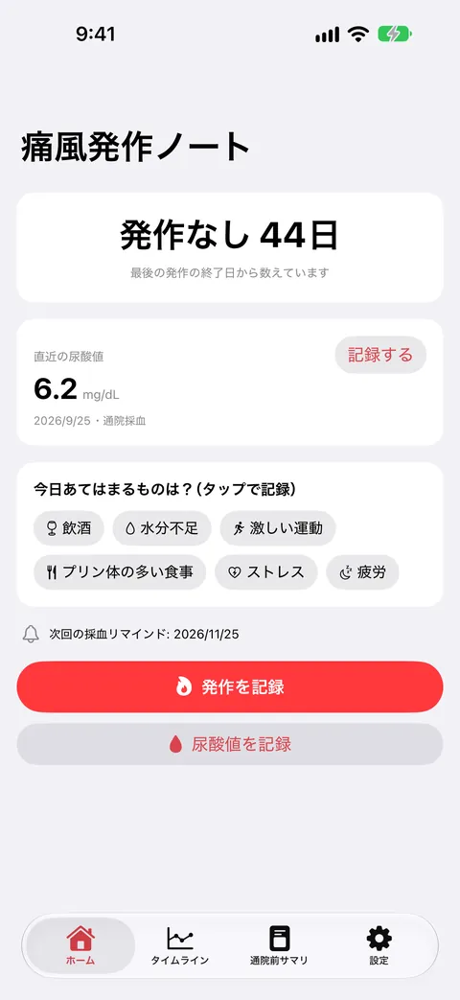
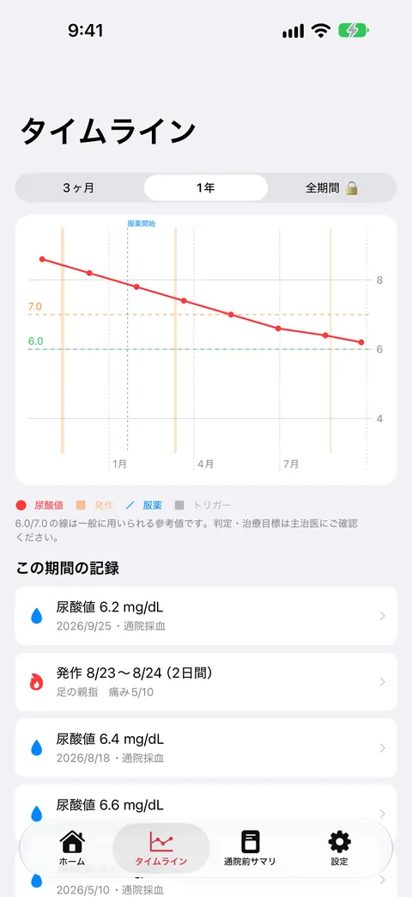
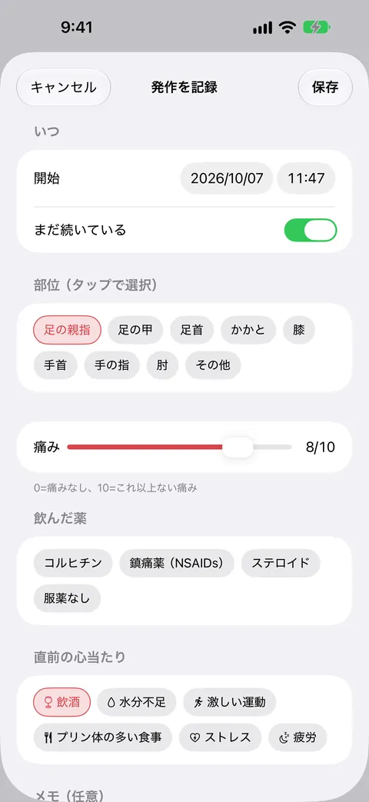
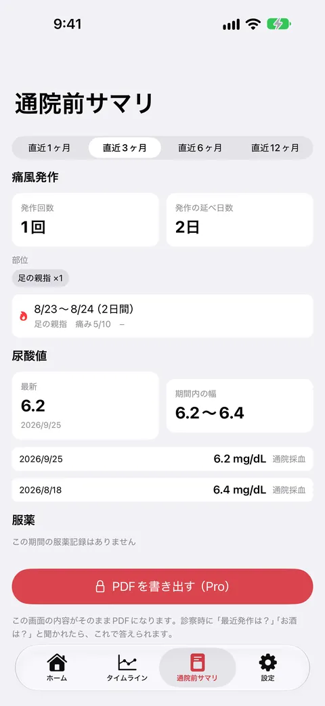
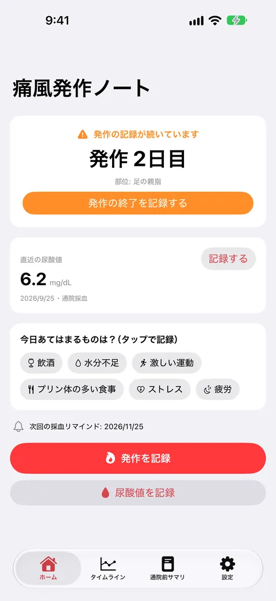

痛風発作ノート
発作ログ・採血リマインド・通院前PDF
痛風の発作を、部位・痛み・飲んだ薬までタップで記録。採血で測った尿酸値と同じ時間軸に並べて見られます。採血のリマインドも届きます。記録と通知は無料。買い切りProで通院前サマリのPDF出力が使えます。





痛風発作ノートは、痛風の発作と、採血で測った尿酸値を記録して、同じ時間軸に並べて見られるアプリです。診察のときに「最近の発作は？」と聞かれて、思い出せずに困らないための記録帳です。
こんなときに
発作がいつ、何をした後に起きたのかを思い出せない。尿酸値は紙の結果票で受け取るだけで、薬を飲み始めてから変わったのかが見えない。採血に行く時期を忘れてしまう。
できること
- 発作の開始・終了、部位、痛みの強さ（0〜10）、飲んだ薬、直前の心当たり（飲酒・水分不足・激しい運動など）を、ほぼタップだけで記録できます。痛みの強いときでも短時間で書き終えます
- 健診や通院の結果票にある尿酸値（mg/dL）を、採血日とあわせて記録できます。薬の開始・変更の日もマーカーとして残せます
- タイムラインに、尿酸値の折れ線・発作の期間・薬のマーカーを同じ時間軸で重ねて表示します
- ホームに「発作なし○日」を大きく表示します。今日あてはまることもタップで記録できます
- 採血の時期のリマインドを通知で受け取れます（周期は1〜3か月で選べます）。年末年始明けと夏の「発作シーズンのお知らせ」も、オンオフを選べます
- 直近の発作回数・尿酸値の推移・薬の記録を1画面にまとめた「通院前サマリ」を見られます。買い切りProでは、そのままPDFにして診察で見せられます
無料で使える範囲
発作・尿酸値・日々の記録は件数の制限なく無料です。タイムライン（直近3か月・1年）、採血リマインド、シーズンのお知らせ、通院前サマリの画面表示も無料です。買い切りPro（¥730）では、通院前サマリのPDF出力、CSV書き出し、タイムラインの全期間表示が使えます。月額課金はありません。
安心について
記録はすべて、このiPhoneの中だけに保存されます。外部のサーバーへ送信されることはなく、会員登録も不要です。
本アプリは、発作と尿酸値を記録して見やすくするためのものです。診断・治療・服薬の助言や、数値の良し悪しの判定は行いません。タイムラインの6.0/7.0の線は、一般に使われる目安の参考表示です。治療の目標や服薬は、必ず主治医の指示に従ってください。